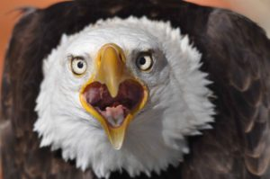

Conservación de las aves rapaces
CONSERVACIÓN DE LAS AVES RAPACES

A pesar de que hoy en día cuentan con una protección legal, no siempre fue así y se las consideró como animales dañinos,
ya fuera por su incidencia sobre especies criadas por el hombre o sobre especies cinegéticas, considerándolas alimañas.
En Europa, la Primera y la Segunda Guerra Mundial supusieron una tregua para la caza de rapaces y tras ellas, entre los años 1950 y 1960,
comienza a protegerse a este grupo de aves, lo cual se ve reflejado en un ligero aumento de sus poblaciones en la década de 1970. En España,
las aves rapaces están bajo protección legal desde 1966.
Debido a su forma de vida depredadora, a menudo en la parte superior de la cadena alimenticia, las aves de presa se enfrentan a problemas
de conservación distintos. La contaminación ha provocado serias declinaciones en algunas especies. El uso generalizado de pesticidas como DDT,
y su acumulación en las presas, fue responsable del adelgazamiento de la cáscara de los huevos en las aves de presa. Asimismo, la reducción de
hábitat debida a la antropización de entornos y la masiva desaparición de presas como los conejos por epidemias como la neumonía hemorrágica vírica
y la mixomatosis causaron un declive severo de algunas poblaciones de rapaces, alcanzando cerca de un 80% de áreas desocupadas por águila imperial ibérica.